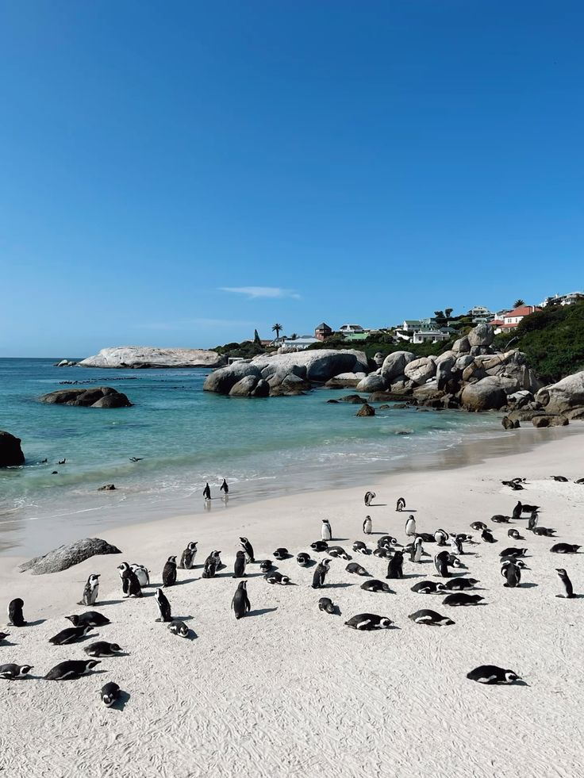

Più letto

Cape Town + Garden Route
- 📍 Cape Town · 4 notti
- 📍 Hermanus · 1 notte
- 📍 Knysna · 2 notti
- 📍 Tsitsikamma · 2 notti
a partire da
€1.450
Vedi itinerario →
Avanzato

Grande Safari Sudafricano
- 📍 Johannesburg · 1 notte
- 📍 Kruger NP · 5 notti
- 📍 Eswatini · 2 notti
- 📍 St Lucia · 3 notti
a partire da
€2.200
Vedi itinerario →
Nuovo

Cape Town Essenziale
- 📍 City Bowl · 3 notti
- 📍 Bo-Kaap walk
- 📍 Cape Peninsula day-trip
- 📍 Stellenbosch · 1 notte
a partire da
€850
Vedi itinerario →

Wild Coast & Drakensberg
- 📍 Durban · 2 notti
- 📍 Coffee Bay · 3 notti
- 📍 Underberg · 2 notti
- 📍 Sani Pass trek
a partire da
€1.600
Vedi itinerario →
Honeymoon
Grand Tour del Sudafrica
- 📍 Cape Town · 4 notti
- 📍 Winelands · 2 notti
- 📍 Garden Route · 5 notti
- 📍 Sabi Sand safari · 3 notti
a partire da
€3.400
Vedi itinerario →
Safari Lampo al Kruger
- 📍 Hoedspruit · 1 notte
- 📍 Kruger Sud · 4 notti
- 📍 Blyde River Canyon
- 📍 Johannesburg · 1 notte
a partire da
€1.250
Vedi itinerario →